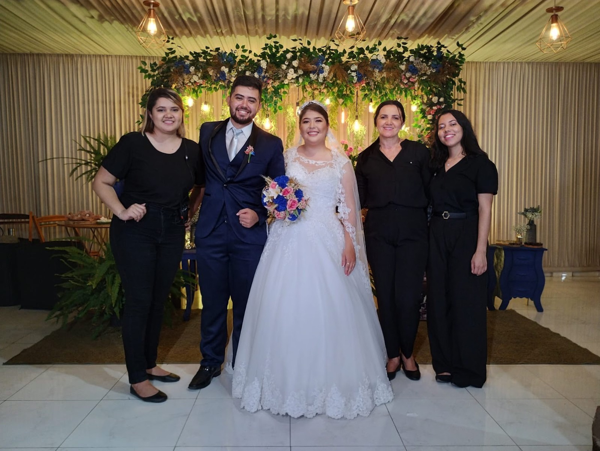
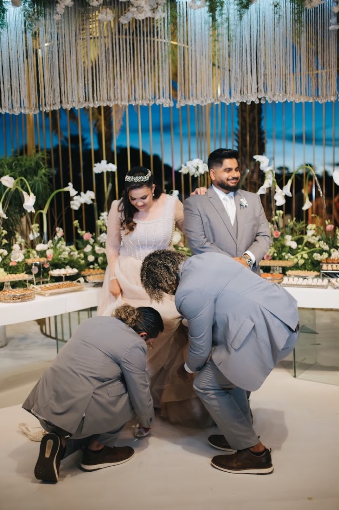
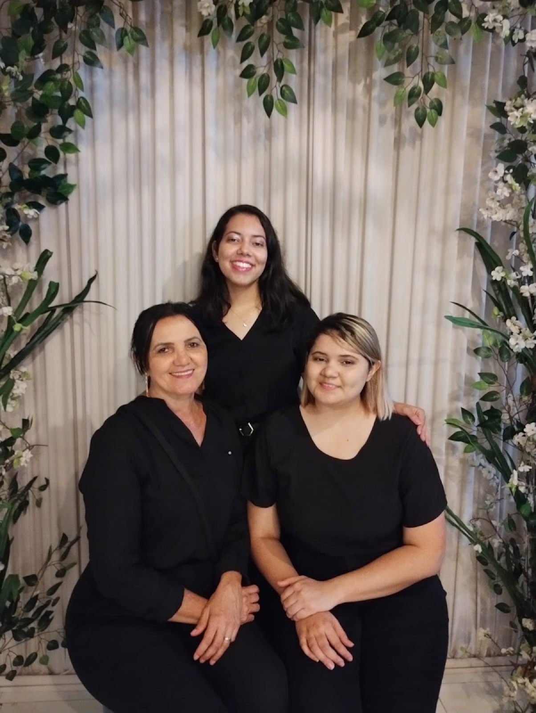
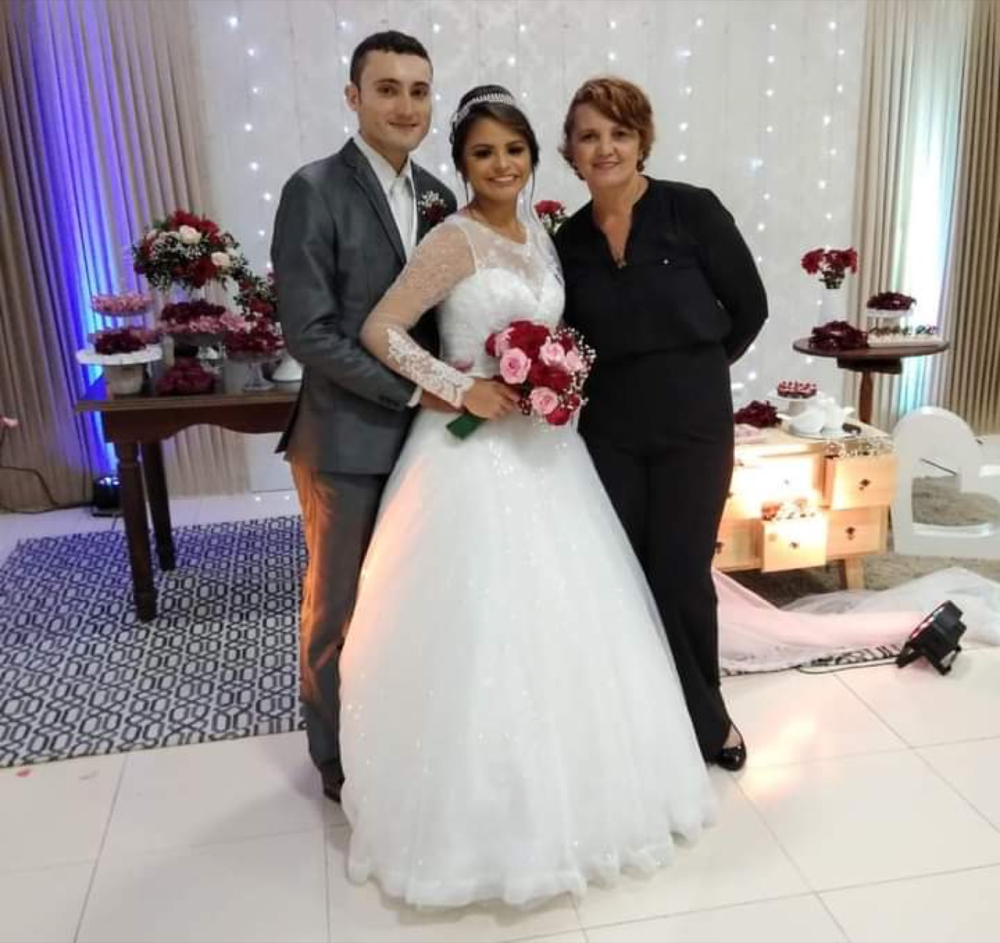
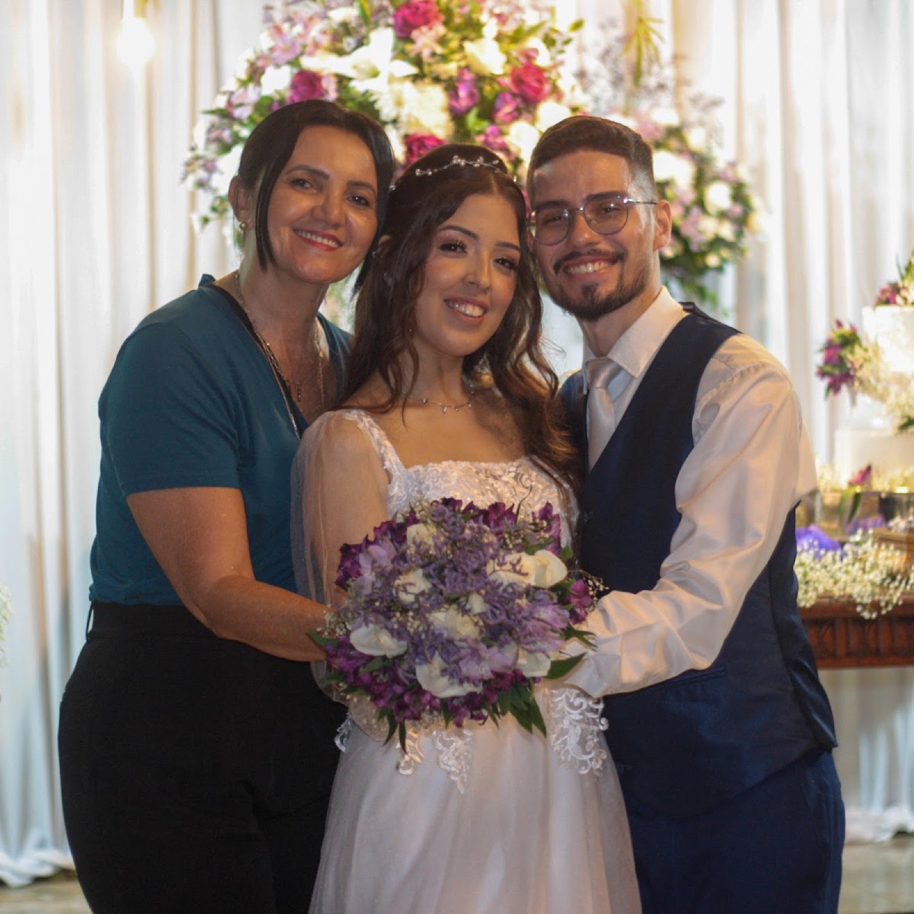

Momentos
Casamentos, debutantes e festas de família
Alguns dias que passaram pelas mãos da Dinha e da equipe.





Casamentos, 15 anos e festas com uma cerimonialista atenciosa ao seu lado, do planejamento até o último convidado. Você vive o dia; a Dinha cuida para que tudo aconteça no tempo certo.

Atendimento excelente! Super atenciosa… Trabalho encantador.
Victoria, avaliação no Google
Um evento bonito começa muito antes da festa. Por isso o cerimonial acompanha cada etapa com calma, carinho e organização.
Vocês contam o sonho, a data e o estilo. A partir daí, os próximos passos ganham ordem e prazo.
Decoração, buffet, foto, música: todo mundo alinhado com o mesmo roteiro, para nada ficar solto.
Entradas, horários e imprevistos nas mãos da cerimonialista e da equipe. Para vocês, só sobra aproveitar.
Alguns dias que passaram pelas mãos da Dinha e da equipe.




Palavras de quem confiou o seu dia à Dinha, deixadas nas avaliações do Google.
“Maravilhosa, tudo perfeito, atendimento nota dez, tudo bem organizado, amei.”
Elizania“Profissional de primeira qualidade.”
Janiele“Ótima experiência! Já recomendei pra amigos.”
Allan“Uma excelente profissional ☺️”
Aurinilda“Muito top, super recomendo.”
AdrianaTrechos de avaliações públicas no Google · 17 avaliações, nota 4,6.
Cinco perguntas rápidas e você recebe um resumo com cronograma sugerido. No final, é só copiar o briefing e levar para a conversa com a Dinha.
O atendimento é com hora marcada, na Granja Portugal. Traga suas ideias, fotos de inspiração e a data que vocês têm em mente.